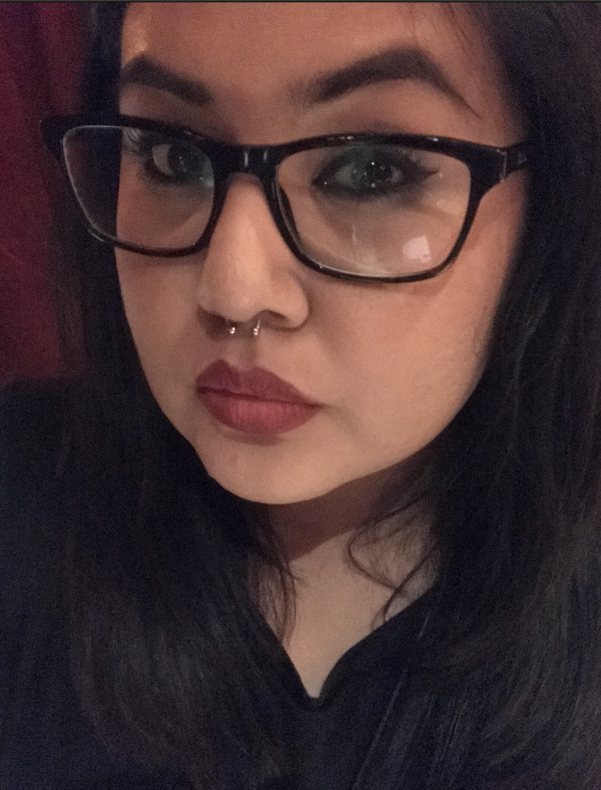

About Me
Hi All! My name is Gladys. Here is a bit about where I am from. I was born in the city Torrance, and I have always lived in Los Angeles. My first job was a waitress in the city of Bell, at a Mexican restaurant. I was only there for a year until I started college. I actually got accepted to Cal Poly Pomona which I attended for two years. But life happens, and due to that my career path changed. I ended up getting a job in the insurance industry at the age of 20. I started off as a customer service representative and a year after working there I got licensed sell insurance in the state of California. I now have my property and casualty license along with my life, health and disability license. I have now been in the insurance industry for over eight years.
I recall back when I was eighteen, I use to modify myspace profiles. I would do it for my family members. I would add images, scroll bars, slideshows, music etc. Later on, I come to find out that it was basic coding. I have always been into computers and electronics. I remember when the iPhone came out; and later on, I was able to jailbreak them and modify them to my liking. Aside from that I like the outdoors, specially hiking/sightseeing. One of my favorite sports to play is Tennis(Although I don't play as much as I would like to. Another activity that I like is going to breweries all-round the city and counties. Craft beer is something that I enjoy as a pass time. Now I am starting my new chapter in my life which is coding boot camp. This course is very challenging, but I am ready for a career change! Wish me luck!